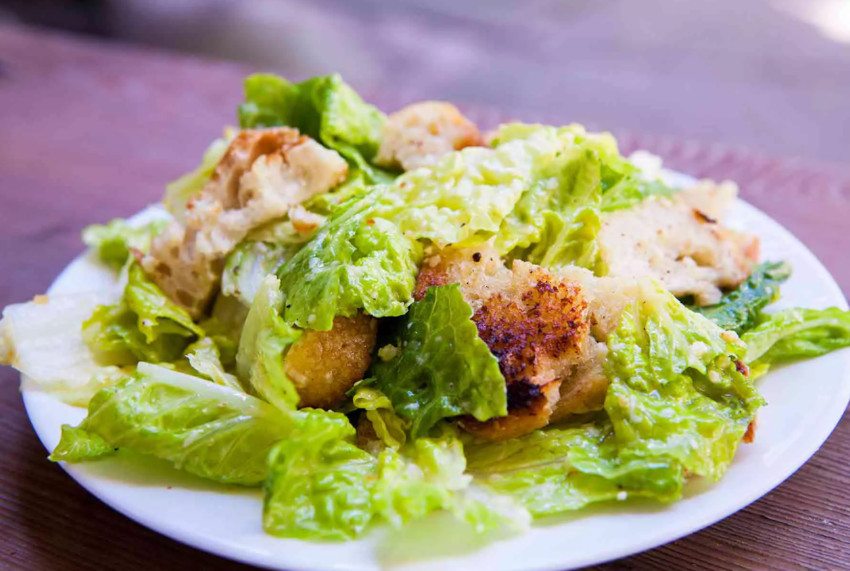

Return to Home
The Caesar Salad! 🥗

Description
This Classic Caesar Salad with romaine lettuce, homemade croutons, Parmesan cheese, and easy homemade
Caesar dressing is sure to please everyone. Plus, you’ll never want to buy Caesar dressing again!
Ingredients:
- ½ cup of high-quality extra virgin olive oil, plus more for brushing
- 4 cloves of garlic, minced
- 1 baguette, preferably a day old, thinly sliced
- ¼ cup fresh lemon juice (plus more to taste)
- 4 ounces Parmesan cheese, grated
- 1 teaspoon anchovy paste, or 1 to 2 anchovies, minced
- 2 eggs
- ¼ teaspoon freshly ground black pepper (or to taste)
- ½ teaspoon salt (or to taste)
- 4 to 6 small heads romaine lettuce
- rinsed
- patted dry
- wilted outer leaves discarded
Food Preperation Steps:
- In a very large bowl, whisk together ½ cup olive oil and garlic and let it sit for at least half an hour.
- While the garlic is sitting, make the croutons. Spread the baguette slices out on a baking sheet.
- Brush or spray with olive oil (or melted butter). If you want garlicky croutons, dip pastry brush in the garlic infused oil you have sitting in Step 1.
- Broil for a couple of minutes until the tops are lightly browned.
- Add minced anchovies (or anchovy paste, if using) and eggs to the oil-garlic mixture. Whisk until creamy.
- Add salt and pepper and 1/4 cup of lemon juice.
- Whisk in half of the Parmesan cheese.
- Using your hands, tear off chunks of lettuce from the heads of romaine lettuce.
- Add to the dressing and toss until coated. Add the rest of the Parmesan cheese, and toss.
- Coarsely chop the toasted bread into croutons and add to the salad. Brush in any crumbs from chopping the bread, too.
- Serve immediately.
Congratulations, you're done! Enjoy your salad!
Nutrition Facts
Per Serving:
- 709 calories
- 27 grams of protein
- 81 grams of carbohydrates
- 34 grams of fat
Source Page Start Home